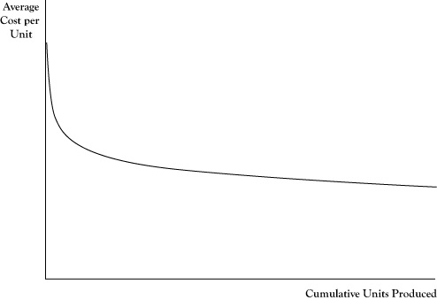

The resource view of production management is to make sure that all resources employed in the creation of goods and services are used as effectively as possible. Smart businesses assess the productivity of key production resources as a means of tracking improvements and in comparing their operations to those of other firms.
Earlier in this chapter we introduced the concept of marginal product. This measure reflects how productive an additional unit of that input would be in creating additional output. However, for some inputs, there are differences in marginal productivity across units. For example, in agriculture an acre of land in one location may be capable of better yields than an acre in another location. At any given input price, firms will seek to employ those units with the highest marginal product first.
In looking at the collective performance of a production operation, we need a measure of productivity that applies to all inputs being used rather than the last unit acquired. One means of doing this is using the measure of average productivityThe total number of units of output divided by the total units of an input; the total dollars in revenue or profit divided by the total units of an input., which is a ratio of the total number of units of output divided by the total units of an input. An alternative measure of average productivity would be the total dollars in revenue or profit divided by the total units of an input.
Computations of average productivity make sense for key inputs around which production processes are designed. In the example of the accounting firm used in this chapter, the number of accountants is probably a good choice. Average productivity could be in the form of labor hours billed divided by accountants hired. If a firm managed to sell 1600 billable hours in 1 year, but only 1500 billable hours in another year, the earlier year indicated higher productivity.
In retail stores, a key resource is the amount of floor space. The productivity of a store could be measured by the total revenue over a period divided by the available square footage. This measure could be compared to the same measure for other stores in the retail chain or with similar competitor stores. Even sections within the store can be compared for which types of goods and services sold are most effective in generating sales, although given that costs vary too, a better productivity measure here may be profit contribution (revenue minus variable cost) per square foot.
The productivity of firms may change over time. In the case of labor, the productivity of individual workers will rise as they gain experience and new workers can be trained more effectively. There is also an improvement in overall productivity from the increased knowledge of management in how to employ productive resources better. These productivity gains from experience and improved knowledge are sometimes called learning by doingProductivity gains that come from experience and improved knowledge.The economics of learning by doing was introduced by Arrow (1962).
In addition to the increased profit potential of improved productivity, new firms or firms starting new operations need to anticipate these gains in deciding whether to engage in a new venture. Often a venture will not look attractive if the assumed costs of production are based on the costs that apply in the initial periods of production. Learning improvements need to be considered as well. In some sense, decreased profits and even losses in the initial production periods are necessary investments for a successful long-term operation.
Improvements due to productivity gains will usually result in decreased average costs. The relationship between cumulative production experience and average cost is called the learning curveThe relationship between cumulative production experience and average cost.. An example appears in Figure 4.4 "Pattern of a Learning Curve Showing Average Cost Declining by a Fixed Percentage for Each Doubling of Cumulative Output". One point to be emphasized is that the quantity on the horizontal axis is cumulative productionTotal production to date., or total production to date, rather than production rate per production period. This is not a scale effect per se. Even if the firm continues to produce at the same rate each period, it will see declines in the average cost per unit of output, especially in the initial stages of operation.
One numerical measure of the impact of learning on average cost is called the doubling rate of reductionThe decrease in average cost that occurs each time cumulative production doubles.. The doubling rate is the reduction in average cost that occurs each time cumulative production doubles. If the average cost declines by 15% each time cumulative production doubles, that would be its doubling rate. A learning curve with a doubling rate of 15% may be called an 85% learning curve to indicate the magnitude of the average cost compared to when cumulative production was only half as large.
Figure 4.4 Pattern of a Learning Curve Showing Average Cost Declining by a Fixed Percentage for Each Doubling of Cumulative Output
Note that the number of units required to double cumulative production will get progressively higher. For example, if cumulative production now is 1000 units, the next doubling will occur at 2000 cumulative units, with the next doubling at 4000 cumulative units, and the following at 8000 cumulative units. Thus the rate of decline in average cost for each successive unit of production will diminish as cumulative production increases.